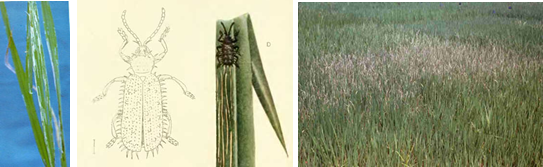
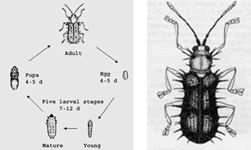

PESTS OF RICE (BORERS AND FOLIAGE FEEDERS) :: Major Pests :: Spiny Beetle / Rice Hispa
7. Spiny beetle / Rice hispa: Dicladispa armigera (Chrysomelidae: Coleoptera)
Distribution and status: Bangladesh, Burma, Southern China, India, West Malaysia, Nepal, Pakistan, Sumatra, Thailand, West Iran. |
 Damage on leaf (IRRI) |
Rice Hispa (Video)
|  | Bionomics: Adult is blue - black shiny beetle with spines on the thorax and elytra. It lays eggs singly on the leaf tip. Grub is minute, flat and yellow. It mines between the epidermal layers of leaf and pupates in leaf mines. Egg period: 4-5 days; Larval period: 7-12 days; Pupal period: 3-5 days. There are six generations / year. |
Management
- The leaf tips containing blotch mines should be plucked and destroyed.
- Manual collection and killing of beetles with hand nets may help in reducing the population of the pest.
- Dust the crop with 10% BHC dust @ 30 kg/ha at least two times at an interval of 40 days.
- Spray endosulfan 1.0 L or lambda-cyhalothrin 2.5 EC 500 ml / EC 250 ml in 500 L water/ha.